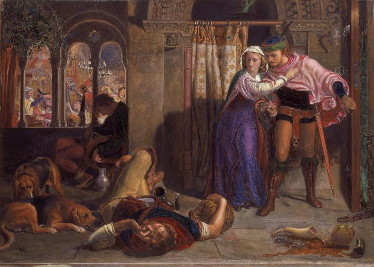
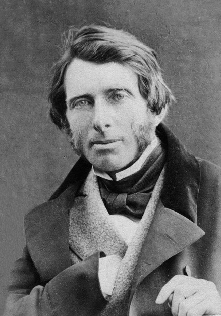
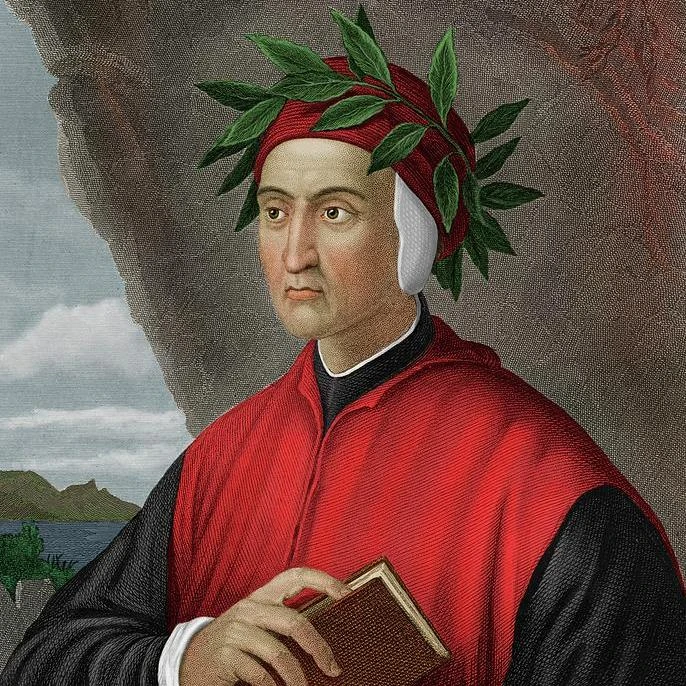
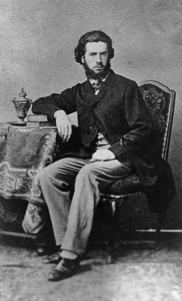
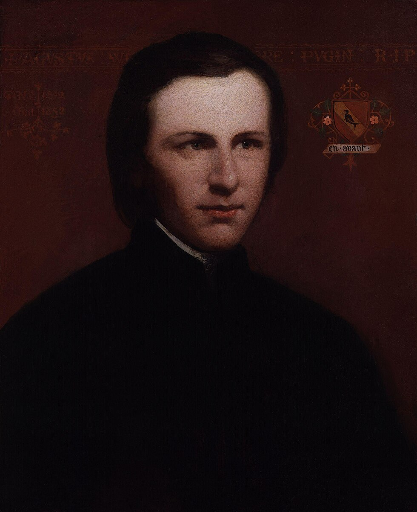
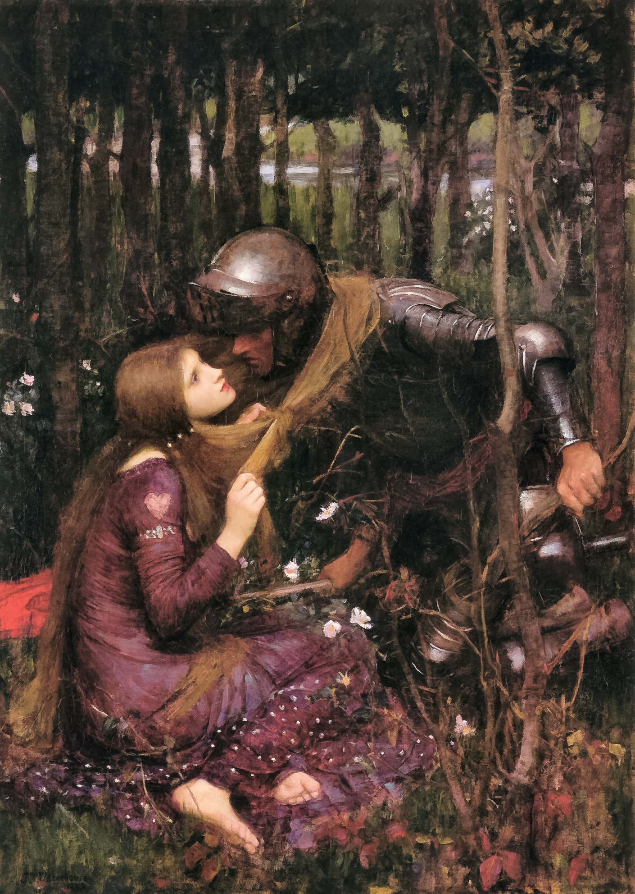

De Prerafaëlieten
Het Begin
De Pre-Raphaelite Brotherhood werd in 1848 opgericht door John Everett Millais (afbeelding bovenaan rechts), Dante Gabriel Rossetti (midden) en William Holman Hunt (links). Hunt en Millais waren studenten aan de Royal Academy of Arts. Ze hadden elkaar eerder ontmoet bij een schetsclub genaamd de Cyclographic Club. Rossetti had Hunt ontmoet nadat hij het schilderij The Eve of St. Agnes van Hunt had gezien, dat gebaseerd is op het gedicht van Keats. Als aspirant-dichter wilde Rossetti de banden tussen romantische poëzie en kunst verbeteren. Datzelfde jaar zijn er nog vier leden bij de broederschap gekomen, waardoor ze uiteindelijk zeven leden hadden. Dit waren William Michael Rossetti (de broer van Dante Gabriel Rossetti), Thomas Woolner, James Collinson en Frederic George Stephens. Ford Madox Brown is ook uitgenodigd om lid te worden, maar hij wilde liever onafhankelijk blijven. Hij bleef wel nauw betrokken bij de groep. Een paar andere jonge schilders en beeldhouwers waren ook nauwe medewerkers, waaronder Charles Allston Collins, Thomas Tupper en Alexander Munro. Ze hielden het bestaan van de broederschap geheim voor de leden van de Royal Academy.
Het was de bedoeling van dit broederschap om kunst te reformeren, door het afwijzen van de ‘mechanistische benadering’ van kunst, dat volgens hen opkwam door de klassieke poses en elegante composities van schilder Raphael, vandaar ook de naam van de broederschap. Ze vonden zijn schilderijen een minachting van de 'simpele waarheid'. Ze wilden terug naar de intense kleuren en details van de Vlaamse kunst en de vroege renaissance.

Eve of St Agnes, oil painting, William Holman Hunt, 1847 - 1857
-
De vier belangrijke eisen van de broederschap waren:
- Je moest authentieke ideeën hebben om uit te drukken.
- Je moest de natuur aandachtig bestuderen, om te weten hoe je die ideeën kunt uitdrukken.
- Je moest sympathie hebben voor wat serieus en oprecht is in eerdere kunst, en je afkeren van wat conventioneel en uit het hoofd geleerd is.
- Je moest écht goede schilderijen en beelden maken.
Inspiratie
“Go to Nature in all singleness of heart, and walk with her laboriously and trustingly, having no other thought but how to penetrate her meaning, and remember her instruction, rejecting nothing, selecting nothing and scorning nothing.”
- John Ruskin

Ruskin(1819-1900) was een beroemde schrijver en criticus en denker. Ruskin zijn vele reizen door Europa bleven zijn interesse in natuur voeden. Hij was een man van de wetenschappen, maar ook kunst. De band tussen Ruskin en de broederschap werd officieel toen Ruskin de kunst van de groep verdedigde tegen kritieken.
“Love and the gentle heart are one and the same.”
- Dante Alighieri

De vader van Dante Gabriel Rosetti was een Italiaanse docent die specialiseerde in het werk van Dante Alighieri, de middeleeuwse dichter, schrijver en filosoof. Zo heeft Rosetti veel van Alighieri meegekregen van zijn vader. De broederschap deelde morele waarden en interesses met Dante Alighieri, zoals innerlijke waarheid en romantische thema’s.
“I assure you, Hunt, I never was so astonished in my whole life. Millais is no longer merely a very satisfactory fulfiller of the sanguine expectations of his prejudiced friends, he is a master of the most exalted proficiency, no one since Titian has ever painted a picture with such exquisite passages of handling and colour, and these charms, with a rare naiveté of character of his own, make the work astonishingly enchanting.”
- Ford Madox Brown

Brown(1821-1893) was een kunstschilder. Rosetti was zo onder de indruk van Brown zijn vroegchristelijke stijl, dat hij een brief had geschreven om onder hem te studeren. Brown had net zoals de broederschap de voorkeur voor unieke en betoverende beelden.
“In pure architecture the smallest detail should have a meaning or serve a purpose.”
- Augustus Welby Pugin

Pugin was een architect en criticus die de wegbereider werd van de neogotische stijl. Hij denkt na over de waarheid in kunst. De broederschap heeft veel van Pugin zijn denkwijzen overgenomen in de schilderkunst en poëzie. Middeleeuwse architectuur, met de zorgvuldig gekozen details, was dan ook een grote inspiratiebron voor de broederschap.
Connectie met Waterhouse
Waterhouse is in een latere generatie geboren dan de broederschap, maar heeft veel overeenkomsten met de prerafaëlieten. Hij was net als de broederschap gefascineerd door schoonheid, intense emoties en het afbeelden van tragische, mysterieuze vrouwen. Zijn schilderijen hebben net als de werken van de prerafaëlieten een levendig kleurgebruik en veel symbolisme, maar hij valt op door zijn wat grovere toets, wat zijn werk toch wat moderner laat lijken.
In ‘La Belle Dame sans Merci (1893)’, schildert Waterhouse een gedicht van Keats, wat een favoriete inspiratie was van de broederschap. Hij schildert een femme fatale in een natuurlijke, betoverende setting met een emotionele spanning, wat geïnspireerd was door hoe de prerafaëlieten dat deden.

La Belle Dame sans Merci, oil painting, John William Waterhouse, 1893.